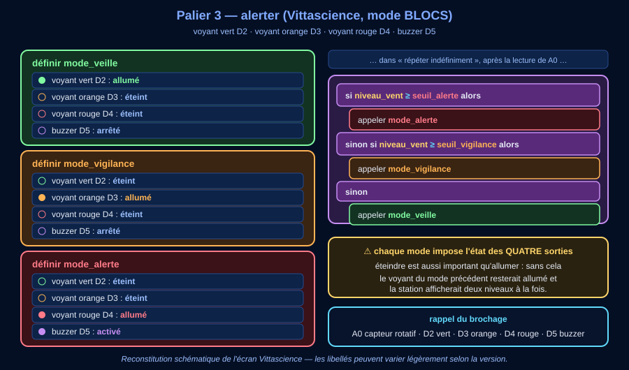
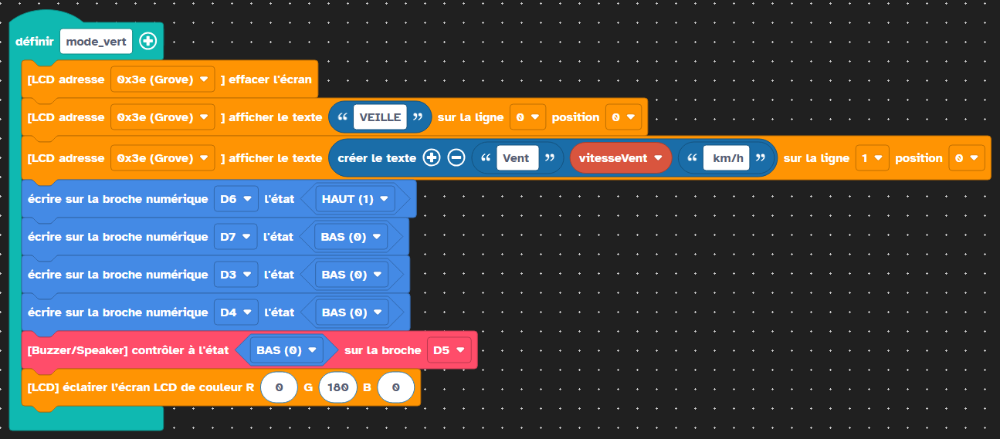
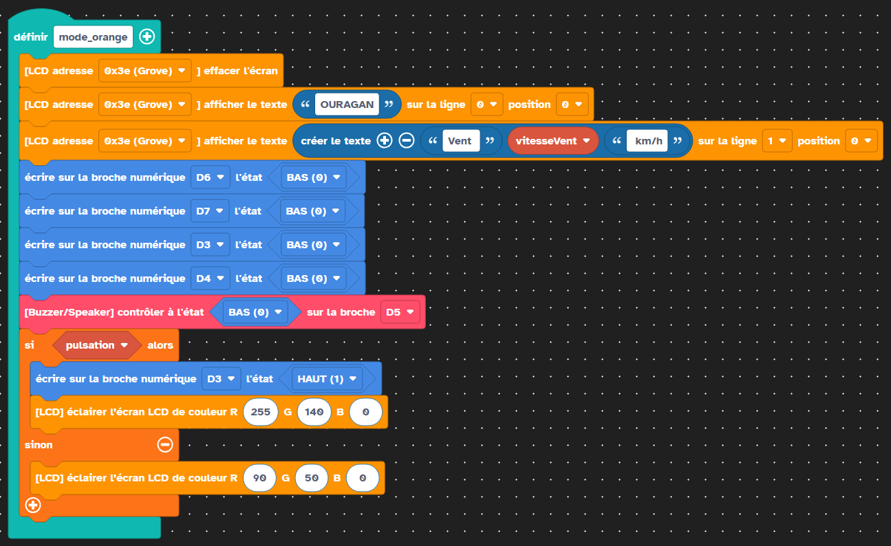
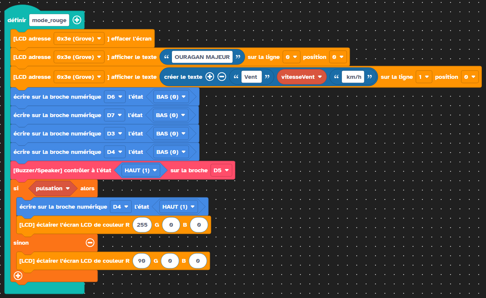
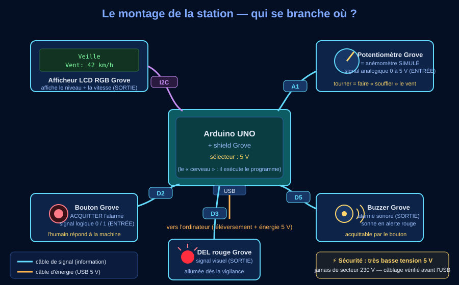

🧱 Séance 2 — Programmer la station en blocs sur Vittascience, palier par palier
Question directrice : comment traduire notre algorithme en un programme qui commande la vraie carte ?
Le programme en blocs sur Vittascience — 4 paliers, du capteur à l'alerte
⏱ ~70 min| Niveau | Vitesse | Voyant | Buzzer | Écran |
|---|---|---|---|---|
| VEILLE | moins de 63 km/h | vert D6, fixe | muet | fond vert, « VEILLE » |
| TEMPÊTE TROPICALE | à partir de 63 | jaune D7, qui pulse | muet | fond jaune |
| OURAGAN | à partir de 118 | orange D3, qui pulse | muet | fond orange |
| OURAGAN MAJEUR | à partir de 178 | rouge D4, qui pulse | sonne | fond rouge |
Entrée : potentiomètre « anémomètre simulé » sur A1 — lecture brute 0-1023, convertie en 0 à 250 km/h. Bouton d'acquittement sur D2 (séance 3). Écran LCD RGB sur I2C.
Un seul voyant allumé à la fois, et le vert ne pulse pas : une lumière qui clignote en permanence, on finit par ne plus la voir. La pulsation doit rester un signal. Et le niveau est toujours écrit en toutes lettres sur l'écran : personne ne doit dépendre de la couleur ou du clignotement pour savoir où on en est.
3e-STATION-palier1-TON NOM (un programme sans nom est introuvable la semaine suivante).🖥 L'interface Vittascience — ici même
👉 FAIS : programme directement dans le cadre ci-dessous. Mode BLOCS (bascule BLOCS / CODE en haut de l'espace de travail) : tu glisses les blocs depuis les catégories Variables · Logique · Boucles · Entrées / sorties · Fonctions, et tu vérifies ton programme avec le simulateur — sans aucun matériel.
Le cadre ci-dessus est l'éditeur Vittascience lui-même : tu y programmes et tu y simules, sans rien installer. Pour travailler au calme dans un onglet à part : ouvrir le programme dans un nouvel onglet.
🔌 Le cadre ne s'affiche pas ? Voici comment travailler quand même
Pas de connexion, réseau du collège filtré, page ouverte hors ligne : tout reste faisable.
- Plan A — dans un onglet : ouvre fr.vittascience.com/arduino, interface Arduino, mode BLOCS. Les liens directs des programmes de la classe sont donnés par le professeur.
- Plan B — sans connexion du tout : les planches de paliers et les captures réelles ci-dessous montrent le programme bloc à bloc, et le banc d'essai en haut de cette page reproduit le comportement de la station. Tu peux répondre à TOUTES les questions et valider l'activité — la construction des blocs se fera à la séance suivante ou à la maison.
Vittascience est le seul élément de cette séquence qui demande Internet. Tout le reste fonctionne hors connexion.
Palier 1 — Lire le vent
👉 FAIS : au démarrage, crée les quatre variables et donne-leur leur valeur — vitesseVent à 0, seuilJaune à 63, seuilOrange à 118, seuilRouge à 178 (bloc mettre … à, catégorie Variables). Puis, dans la boucle répéter indéfiniment : mets dans vitesseVent la valeur arrondie de lire entrée analogique A1 × 250 ÷ 1023, et affiche vitesseVent sur le moniteur série. Termine par attendre 200 millisecondes.
💡 Raccourci accepté : Vittascience propose un bloc transformer la valeur … de [0 à 1023] vers [0 à 250] qui fait la conversion en un seul geste. Les deux écritures sont justes — mais fais d'abord le calcul à la main : c'est lui qu'on te demandera d'expliquer, pas le bloc. (En C++, ce même bloc s'appelle map() : tu le retrouveras en séance 3.)
![Reconstitution schématique de l'écran Vittascience au palier 1. Un bloc « au démarrage » contient quatre blocs : mettre vitesseVent à 0, mettre seuilJaune à 63, mettre seuilOrange à 118, mettre seuilRouge à 178. En dessous, un bloc « répéter indéfiniment » contient : mettre vitesseVent à arrondir de lire entrée analogique A1 multiplié par 250 divisé par 1023 ; afficher vitesseVent sur le moniteur ; attendre 200 millisecondes. À droite, une vignette du moniteur série attendu montre des valeurs de vitesseVent qui montent : 0, 31, 95, 125, 186, 231 quand on tourne le bouton du potentiomètre, et un rappel qu'une seule échelle est utilisée du début à la fin, de 0 à 250 km/h](Images/blocs_palier1_lire_vent.svg)
seuilJaune se retrouve instantanément dans le programme quand on cherche « le seuil du voyant jaune ». Le niveau, lui, garde son nom réel — tempête tropicale, ouragan, ouragan majeur — parce que c'est celui-là qui s'écrit sur l'écran, et qu'un habitant ne connaît pas nos variables. Deux vocabulaires, deux usages : celui du programmeur et celui de la population.👀 VÉRIFIE au simulateur : tourne le potentiomètre — la valeur affichée au moniteur doit monter et descendre avec ton geste, entre 0 et 250 km/h. Si elle dépasse 250 ou reste bloquée à 0, c'est la conversion qu'il faut relire.
💾 Rituel : enregistre sous 3e-STATION-palier1-TON NOM avant de passer au palier 2.
Palier 2 — Décider du niveau
👉 FAIS : sous la lecture, pose la cascade de ton algorithme (activité 2) avec le bloc si / sinon si / sinon (catégorie Logique) : d'abord vitesseVent ≥ seuilRouge, sinon si ≥ seuilOrange, sinon si ≥ seuilJaune, sinon le dernier cas. Utilise bien l'opérateur « supérieur ou égal » (≥), pas « supérieur » (>). Pour l'instant, chaque branche se contente d'afficher son nom au moniteur.
![Reconstitution schématique de l'écran Vittascience au palier 2. Une cascade de blocs : si vitesseVent supérieur ou égal à seuilRouge alors afficher OURAGAN MAJEUR ; sinon si vitesseVent supérieur ou égal à seuilOrange alors afficher OURAGAN ; sinon si vitesseVent supérieur ou égal à seuilJaune alors afficher TEMPETE TROPICALE ; sinon afficher VEILLE. Un bandeau rappelle que la lecture de A1 du palier 1 reste au-dessus, dans répéter indéfiniment. À droite, un encart d'avertissement explique qu'on teste le seuil le plus haut d'abord, sinon 200 km/h s'arrêterait à TEMPETE TROPICALE puisque 200 est aussi supérieur à 63 et que la cascade s'arrête au premier test réussi — avec quatre niveaux, l'erreur en coûte deux. Un second encart liste les six frontières à tester, trois seuils multipliés par deux essais : 62 donne VEILLE, 63 donne TEMPETE, 117 donne TEMPETE, 118 donne OURAGAN, 177 donne OURAGAN, 178 donne OURAGAN MAJEUR](Images/blocs_palier2_decider.svg)
👀 VÉRIFIE au simulateur : quatre positions du potentiomètre → quatre messages. Puis les six frontières, qui sont le vrai test : 62 puis 63, 117 puis 118, 177 puis 178. Au banc d'essai de cette page, fais aussi passer la station par les quatre niveaux (le banc le trace ✔).
💾 Rituel : enregistre sous 3e-STATION-palier2-TON NOM. Si un doute : compare bloc à bloc avec la planche, PUIS appelle le professeur.
Palier 3 — Alerter : la station parle
👉 FAIS : dans la catégorie Fonctions, définis quatre sous-programmes — mode_vert, mode_jaune, mode_orange, mode_rouge. Chacun impose l'état des SEPT sorties : les quatre voyants (vert D6, jaune D7, orange D3, rouge D4), le buzzer D5 et les deux lignes de l'écran. Puis remplace le contenu de chaque branche de ta cascade par un simple appeler mode_….
mode_orange se contente d'allumer l'orange, le voyant rouge allumé une seconde plus tôt reste allumé : la station afficherait deux niveaux à la fois. Un mode ne dit pas « ce que j'allume », il dit « à quoi ressemble la station entière quand je suis en ouragan ». Éteindre est aussi important qu'allumer — et avec quatre voyants, l'oubli se voit tout de suite.
📖 Description détaillée de la planche
À gauche, quatre sous-programmes définis : mode_vert (vert allumé, jaune, orange et rouge éteints, buzzer arrêté, écran vert « VEILLE ») ; mode_jaune (jaune seul allumé et pulsant, écran jaune « TEMPETE TROP. ») ; mode_orange (orange seul, écran orange « OURAGAN ») ; mode_rouge (rouge seul, buzzer activé, écran rouge « OURAGAN MAJEUR »).
À droite, la cascade du palier 2 dont chaque branche ne contient plus qu'un appel : appeler mode_rouge, appeler mode_orange, appeler mode_jaune, appeler mode_vert. La deuxième ligne de l'écran affiche toujours « Vent: NNN km/h ».
👀 VÉRIFIE au simulateur : vert seul en dessous de 63, jaune seul dès 63, orange seul dès 118, rouge + buzzer dès 178 — et jamais deux voyants ensemble. Balaye lentement toute la course du potentiomètre en surveillant ce point.
💾 Rituel : enregistre sous 3e-STATION-palier3-TON NOM, puis une copie propre et commentée sous 3e-STATION-complet-TON NOM. Ton programme commande maintenant un système entier : capteur → décision → écran, voyants et buzzer.
Palier 4 — (aperçu) L'humain entre dans la boucle
Le bouton d'acquittement — couper le buzzer sans éteindre l'alerte — c'est la séance 3, le cœur de l'interaction humain-machine. La planche est déjà là si tu es en avance, mais la logique de l'événement « le niveau vient de changer » mérite une séance entière.
📸 Le programme de référence, tel qu'il tourne vraiment
Les images ci-dessous ne sont pas des dessins : ce sont des captures d'écran du programme complet, construit et exécuté sur Vittascience. Elles servent de preuve et de modèle de comparaison — si ton programme ne fait pas la même chose, l'écart est chez toi, pas dans l'énoncé.
![Capture d'écran réelle de Vittascience : le bloc « Au démarrage » du programme de référence. Il contient, dans l'ordre : initialiser la communication série à 9600 bauds ; affecter à seuilJaune la valeur 63 ; affecter à seuilOrange la valeur 118 ; affecter à seuilRouge la valeur 178 ; affecter à pasPulsation la valeur 2 ; affecter à compteurPulsation la valeur 0 ; affecter à vitesseVent la valeur 0 ; affecter à niveauAlerte la valeur texte VEILLE ; affecter à pulsation la valeur faux ; affecter à niveauPrecedent la valeur texte VEILLE](Images/vittascience/C_1_demarrage.png)
VEILLE, pas de pulsation). Remarque que niveauPrecedent est initialisé lui aussi à VEILLE : sans cela, la station croirait au premier tour que le niveau vient de changer, et ferait sonner le buzzer pour rien.![Capture d'écran réelle de Vittascience : le haut du bloc « Répéter indéfiniment ». Premier bloc : affecter à vitesseVent la valeur arrondie de transformer la valeur du potentiomètre rotatif sur la broche A1 de la fourchette 0 à 1023 vers la fourchette 0 à 250. Puis : affecter à compteurPulsation la valeur compteurPulsation plus 1 ; si compteurPulsation supérieur ou égal à pasPulsation alors remettre compteurPulsation à 0 et affecter à pulsation la valeur non pulsation. Vient ensuite la cascade de décision : si vitesseVent supérieur ou égal à seuilRouge alors affecter à niveauAlerte le texte OURAGAN MAJEUR ; sinon si supérieur ou égal à seuilOrange alors OURAGAN ; sinon si supérieur ou égal à seuilJaune alors TEMPETE TROP. ; sinon VEILLE](Images/vittascience/C_2_boucle_haut.png)
pasPulsation (2), il bascule pulsation du vrai au faux. ③ La cascade est exactement celle de ton algorigramme, seuil le plus haut d'abord — et elle ne fait qu'une chose : écrire un nom dans niveauAlerte. Décider et agir sont deux moments séparés.![Capture d'écran réelle de Vittascience : le bas du bloc « Répéter indéfiniment ». Une seconde cascade aiguille selon le contenu de niveauAlerte : si niveauAlerte égale OURAGAN MAJEUR alors appeler mode_rouge ; sinon si OURAGAN alors mode_orange ; sinon si TEMPETE TROP. alors mode_jaune ; sinon mode_vert. Puis deux blocs écrire dans la console : le texte Vent suivi de vitesseVent puis km/h avec un saut de ligne, et le texte Niveau deux-points suivi de niveauAlerte avec un saut de ligne. Le dernier bloc est attendre 300 millisecondes](Images/vittascience/C_3_boucle_bas.png)
mode_rouge, mode_orange, mode_jaune, mode_vert. C'est la structuration en sous-programmes exigée en 3e. Les deux écrire dans la console sont la trace : c'est elle qui te sauvera en séance 3 quand il faudra diagnostiquer une panne. Écart avec la consigne du palier 1 : ce programme-là attend 300 ms et non 200. Rien de faux — c'est un réglage, pas une règle : plus l'attente est longue, plus l'affichage est calme, mais plus la station réagit tard. Dans les deux cas on reste très loin de la seconde exigée par la mairie.📖 Les quatre sous-programmes de mode, en captures
Chacun impose l'état de toutes les sorties, puis n'ajoute que ce qui lui est propre. Ouvre-les et compare-les deux à deux : ce qu'ils ont en commun est la règle, ce qui les distingue est le niveau.

pulsation, et l'écran bascule en même temps du jaune vif (255, 255, 0) au jaune sombre (90, 90, 0). Deux signaux qui battent ensemble : celui qui ne voit pas bien le petit voyant voit respirer l'écran entier. Et le nom du niveau reste écrit pendant tout ce temps — la couleur seule ne dit jamais rien.

🎁 Bonus (facultatif — hors parcours obligatoire) : le même programme dans ArduBlock
Avant Vittascience, ce programme avait été construit dans ArduBlock Éducation 1.7, un autre logiciel de programmation par blocs. Il fait le même travail, mais ne simule pas : il faut une carte branchée pour voir quoi que ce soit. C'est la raison pour laquelle la séquence se fait aujourd'hui sur Vittascience — et c'est déjà une leçon : on choisit un outil pour ce qu'il permet de faire en classe, pas par habitude.
Les deux captures ci-dessous sont de vraies captures d'écran du logiciel, prises pendant la construction du programme, aux paliers 1 et 2. Regarde-les comme un document : les blocs changent de forme et de nom, mais tu retrouves exactement la même chose — la boucle, la lecture d'une entrée analogique, la cascade de tests avec le seuil le plus haut d'abord. C'est le sens de la question c) de l'activité 2 : l'algorigramme ne dépend pas du logiciel.
![Capture d'écran réelle du logiciel ArduBlock Éducation 1.7, fenêtre intitulée 3e-STATION-palier1.abp. À gauche, la palette des catégories de blocs : Structure, Sous-programmes, Broches, Tests, Opérateurs mathématiques, Variables/Constantes, Temps, Moniteur série, Sons, Capteurs, Actionneurs, Afficheurs. Au centre, un grand bloc Boucle contient trois blocs empilés : définir la variable entière mesureBrute avec pour valeur celle de la broche Entrée Analogique A1 ; définir la variable entière vitesseVent avec un bloc Réétalonner qui transforme la fourchette actuelle 0-1023 en nouvelle fourchette 0-250 ; et Écrire sur le port série la valeur de vitesseVent avec passage à la ligne](Images/bonus_ardublock_palier1.png)
3e-STATION-palier1.abp.![Capture d'écran réelle du logiciel ArduBlock Éducation 1.7, fenêtre intitulée 3e-STATION-palier2.abp. À gauche, la palette des catégories de blocs : Structure, Sous-programmes, Broches, Tests, Opérateurs mathématiques, Variables/Constantes, Temps, Moniteur série, Sons, Capteurs, Actionneurs, Afficheurs. Au centre, un grand bloc Boucle contient : définir la variable entière mesureBrute avec la valeur de la broche Entrée Analogique A1 ; définir la variable entière vitesseVent avec un bloc Réétalonner qui transforme la fourchette 0-1023 en 0-250 ; puis un bloc Si-Sinon dont le test est vitesseVent supérieur ou égal à 150 et qui met niveauAlerte à 2, sinon un second Si-Sinon dont le test est vitesseVent supérieur ou égal à 100 et qui met niveauAlerte à 1, sinon niveauAlerte à 0 ; enfin un bloc Écrire sur le port série qui envoie vitesseVent](Images/bonus_ardublock_palier2.png)
3e-STATION-palier2.abp. Attention aux seuils : cette capture est antérieure au choix des seuils de Saffir-Simpson — elle montre encore 100 et 150, et seulement trois niveaux. L'échelle, elle, est déjà la bonne (km/h, 0-250). Elle n'a pas été retouchée : une capture montre ce que le logiciel affichait ce jour-là. À toi de repérer les deux écarts avec ton programme d'aujourd'hui — c'est un bon exercice de lecture.Défi (sans vérificateur) : compare une capture ArduBlock et la planche Vittascience du même palier. Écris trois phrases : ce qui a changé (les mots, les couleurs, la façon d'emboîter), ce qui n'a pas changé (le raisonnement, l'ordre des tests), et ce que Vittascience apporte en plus (le simulateur : programmer sans carte).
⚠️ Ce bonus est hors parcours obligatoire : il n'est ni évalué, ni exigé par le vérificateur. Le programme officiel de la séquence est celui de Vittascience.
Mon journal de paliers
🪜 Version étayée — des phrases à compléter
Le niveau attendu est exactement le même qu'avec la consigne libre : ces débuts de phrases retirent l'obstacle de la rédaction, pas l'exigence scientifique. Recopie-les et complète chaque « ____ ».
- Palier 1 — j'ai mis le potentiomètre à ____ , le moniteur a affiché ____ km/h. La valeur monte quand ____ , donc la lecture ____ .
- Palier 2 — j'ai essayé les frontières ____ et ____ : la première a donné ____ , la seconde ____ . C'est bien ce qu'exige le cahier des charges, parce que « à partir de » veut dire ____ .
- Palier 3 — à ____ km/h, le voyant ____ était seul allumé et les ____ autres étaient éteints ; le buzzer était ____ .
- Ce qui m'a résisté — au palier ____ , je m'attendais à ____ et j'ai obtenu ____ . J'ai corrigé en ____ .
💡 Aide de niveau 1
Palier 1 : 512 est à peu près la moitié de 1023, et l'échelle va de 0 à 250 km/h. Pour la deuxième question, situe le résultat parmi les trois seuils. Palier 2 : rejoue le scénario de l'activité 2 avec 200 km/h ; et relis ce que « ≥ » veut dire exactement. Palier 3 : 130 est entre 118 et 178 — et pense à l'état de toutes les sorties, pas d'une seule.
💡💡 Aide de niveau 2
Palier 1 : 512 × 250 ÷ 1023 ≈ 125 km/h (accepté : 123 à 127) — et 125 est au-dessus de 118 sans atteindre 178, donc ouragan.
Palier 2 : 200 ≥ 63 est vrai → son programme s'arrête à « tempête tropicale » sans jamais tester les deux seuils supérieurs : le bug coûte deux niveaux. Et « > 178 » exclut 178 lui-même : à 178 pile, son programme dit « ouragan » alors que le cahier des charges dit « ouragan majeur ».
Palier 3 : entre 118 et 178 → orange SEUL, les trois autres voyants éteints, buzzer muet ; deux voyants allumés en même temps = un mode qui a oublié d'éteindre les autres.
✅ Correction complète
P1 : vitesseVent ≈ 125 km/h (512 × 250 ÷ 1023). La conversion est une proportionnalité : on transporte une mesure d'une échelle (0-1023, ce que sait lire la carte) vers une autre (0-250 km/h, ce que comprend l'humain). Et 125 km/h, c'est déjà un ouragan : au-dessus de 118, en dessous de 178.
P2 : tempête tropicale — c'est le bug ! L'ordre des SI est un choix d'algorithme, pas de dessin : le seuil le plus haut se teste en premier. Et le piège du « > » : il se trompe sur 178 pile, et sur 178 seulement. Un programme faux sur UNE valeur sur deux cent cinquante reste faux : c'est précisément pour attraper ces erreurs-là qu'on teste les six frontières (62/63, 117/118, 177/178) et pas seulement « une petite valeur, une moyenne, une grande ».
P3 : orange seul, vert et rouge éteints, buzzer muet — le buzzer attend l'alerte, et l'acquittement viendra en séance 3. Si tu vois deux voyants ensemble, cherche le sous-programme qui allume sans éteindre : chaque mode doit imposer l'état des QUATRE sorties, sinon la station garde l'affichage du niveau précédent.
Méthode : le développement par paliers (une fonctionnalité à la fois, testée avant la suivante) est LA méthode des professionnels : quand quelque chose casse, le coupable est forcément dans le dernier palier. Le simulateur de Vittascience rend ce va-et-vient immédiat — c'est pour cela qu'on l'utilise.
Limite : le potentiomètre ne mesure pas le vent : il simule l'anémomètre, et sa graduation en km/h est une convention de la maquette — un vrai anémomètre compte des tours. Cela ne change rien au raisonnement, seulement à l'origine du nombre. Et nos blocs re-décident à chaque tour de boucle (5 fois/seconde) : un vrai produit lisserait la mesure pour éviter le clignotement autour d'un seuil.
🅰 Fiche version matériel réel (à faire valider par le professeur)
Montage de la MAQUETTE (celui de cette séance) : shield Grove sélecteur 5 V — capteur rotatif A0, voyant vert D2, voyant orange D3, voyant rouge D4, buzzer D5. C'est le montage sur lequel le programme Vittascience se téléverse tel quel. Câblage vérifié par le professeur AVANT le branchement USB.
Montage de la STATION du labo (séances 3 et 4) : le schéma ci-dessous — potentiomètre A1, bouton d'acquittement D2, DEL D3, buzzer D5, LCD RGB I2C. C'est la station complète, avec son interface humain-machine ; elle travaille en km/h.

Dépannage : rien sur le LCD → connecteur I2C et bibliothèque Grove ; valeur figée → mauvais port analogique (vérifie que la lecture se fait bien sur A1) ; deux voyants allumés ensemble → un sous-programme de mode qui n'éteint pas les autres sorties ; le téléversement échoue → carte ou port mal choisis (gestes d'outil) ; valeurs qui « tremblent » → normal, le CAN hésite entre deux paliers.
Sécurité : très basse tension 5 V uniquement ; jamais de secteur 230 V ; ne jamais brancher/débrancher un module sous tension ; en cas d'odeur ou d'échauffement, débrancher l'USB et appeler le professeur.
Programme de référence : le C++ commenté ligne à ligne est fourni (station_alerte_cyclonique.ino) — compilation vérifiée pour arduino:avr:uno (6 764 octets de flash). Les élèves le liront en séance 3.